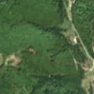
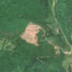

6,6 ha de pădure schimbată lângă Poiana Mărului
Între vara lui 2025 și 4 mai 2026, pe aproximativ 6,6 ha de pădure din orașul Zărnești, lângă Poiana Mărului, județul Brașov, imaginile Sentinel-2 arată că vegetația a dispărut sau s-a schimbat puternic. În registrul public există o autorizație de tăiere pentru acest loc.
Autorizația de tăiere
cu autorizație
Parcela autorizată acoperă zona, iar autorizația era valabilă când s-a tăiat.
Ce se vede în poze: În poza detaliată zona marcată era acoperită de pădure deasă, iar în poza «după» apare un luminiș mare cu pământ dezgolit, în timp ce pădurea din jur rămâne verde. Forma și marginile clare arată o tăiere de pădure, nu o schimbare de sezon.


Înainte și după: Copernicus Sentinel-2, 10 m pe pixel, conturul zonei cu portocaliu. Poza detaliată (Esri World Imagery) e de acum 1–4 ani: arată ce era acolo înainte, nu tăierea.
Pe scurt
- Identificator
- 20260504_45600_25344
- Locul
- Poiana Mărului, orașul Zărnești, județul Brașov (SIRUTA 40492)
- Coordonate (centru)
- 45.60015, 25.34409 · Google Maps · OpenStreetMap
- Suprafața
- 6,6 ha (din pixeli de 10 m; ± câțiva pixeli pe margine)
- Pădurea întreagă
- în vara lui 2025 (de atunci, nori sau iarnă)
- Prima imagine cu schimbarea
- 4 mai 2026
- Imagini în care se vede schimbarea
- 14
- Cât de sigur e semnalul din satelit
- ridicată
- Autorizația cea mai apropiată
- APV 2400159701700 · Regia Publică Locală A Pădurilor Piatra Craiului R.A., valabilă 15 iulie 2025 – 30 ianuarie 2026, la 0 m de zonă
- Terenul
- pădure privată, după amenajamentul silvic publicat
- Pădure pierdută în jur, alți ani
- 2025 (Hansen)
- Garda Forestieră
- Brașov
Dacă vrei să verifici sau să sesizezi
- Pădurile din județul Brașov sunt în grija Gărzii Forestiere Brașov, care controlează tăierile și dă amenzile.
- Autorizația găsită în zonă e emisă de Regia Publică Locală A Pădurilor Piatra Craiului R.A..
- Formularul Gărzii Forestiere Naționale primește sesizări și fără nume. Trimite linkul acestei pagini, coordonatele și pozele. Dacă tăierea e în desfășurare, sună la 112.
- Autorizațiile și transporturile de lemn se pot căuta în Inspectorul Pădurii.
Pagina arată ce se vede din satelit și ce scrie în registrul public; nu e o dovadă în sine.
Din alte surse
- presă (probabilă): Știre despre tăieri la Poiana Mărului, Brașov, 22.05.2026: „Control la un depozit din Poiana Mărului: polițiștii au confiscat peste 26 de metri cubi de lemn - SalutFagaras” Menționează ilegalitate, autorizații sau Garda Forestieră. sursa
Cum citezi zona
Linkul acestei pagini nu se schimbă. Dacă zona iese vreodată de pe hartă, pagina rămâne, cu data și cu ce știam despre ea.
Pădurea RO, zona 20260504_45600_25344: 6,6 ha, Poiana Mărului, orașul Zărnești, județul Brașov; schimbare văzută din satelit între vara lui 2025 și 4 mai 2026. https://iliemihai.github.io/padurea-ro/zona/20260504_45600_25344/ (consultat la [data]). Date: CC BY 4.0.
Datele zonei: GeoJSON · toate zonele: date deschise · licența CC BY 4.0.
Istoricul zonei pe hartă
Starea se poate schimba când registrul publică o autorizație sau când analistul vede poze mai bune. O ținem aici, ca un link citat să arate și ce spuneam atunci.
Pe hartă cel târziu din 5 noiembrie 2026.
- 5 noiembrie 2026 – azi · cu autorizație
Detalii tehnice, pentru verificare
De ce acest nivel de încredere:
- văzută schimbată în 14 imagini diferite
- peste 3 ha
- pădurea din jur e neschimbată
- ultima dată am văzut-o intactă în vara lui 2025 (de atunci, nori sau zăpadă)
- AI-ul vede pădure dispărută
Ce a văzut analistul cu context: În Sentinel-2 «după» zona de ~6,6 ha are ton roz-deschis (sol dezgolit) cu margini ascuțite, în mijlocul unui masiv verde; în «înainte» (2025-08-30) același loc avea coronament continuu, iar poza detaliată din 2024 arată coronament închis (98% în 2000, WorldCover 100% copaci). Panta de 22° și drumul la 0 m susțin o exploatare forestieră, dar o alunecare de teren nu poate fi exclusă complet; autorizația APV din apropiere nu se suprapune (0%), deci tăierea apare neacoperită de registru.
- Placa Sentinel-2
- 35TLL
- NDVI de referință
- 0.88
- NBR de referință
- 0.62
- Scăderea în pădurea din jur
- 0.0
- Persistență
- 0.97
- NDVI / NBR după
- 0.384 / 0.13
- Analistul de zi (model)
- taiere · 0.9 · claude-haiku-5-5
- Analistul cu context (model)
- taiere_rasa · 0.72
Cum se calculează fiecare: metodologia.
Pune harta zonei într-un articol
Copiază codul în articol (merge în majoritatea site-urilor de știri). Sau pune doar linkul: WhatsApp, Facebook și X arată singure poza zonei.